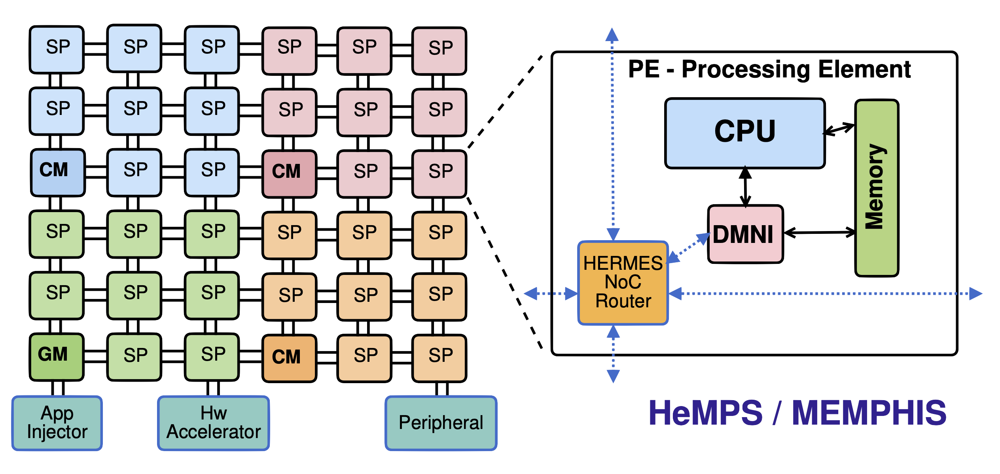
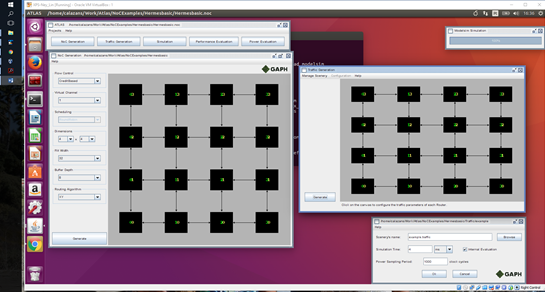
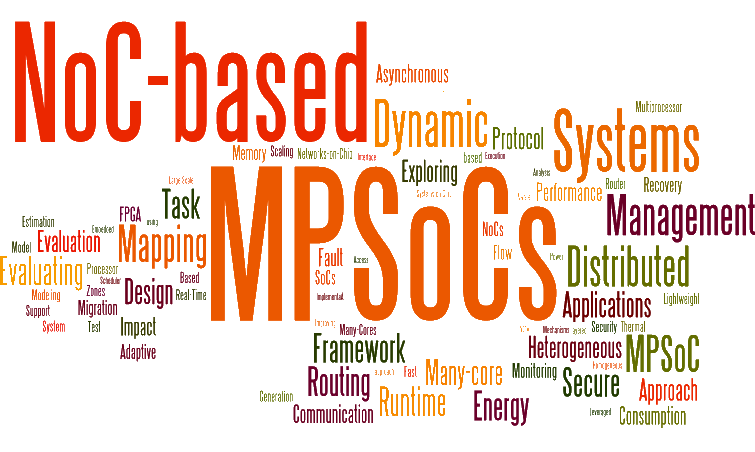

|
|

|

|

|
GAPH Group |
| Journals | Conferences | Thesis | Dissertations | TCC | Memphis MPSoC |
| Microeletrônica | Sist. Int. Chip |
ACADEMIC BACKGROUND
- PhD in Microelectronics at LIRMM (1994)
- MSc in Computer Science at PPGC-UFRGS (1990)
- BS in Electrical Engineering at EE-UFRGS (1987)
RESEARCH INTERESTS
- microelectronics
- security in embedded systems
- multiprocessor systems on chip (many-cores / MPSoCs)
- networks-on-chip (NoCs)
- reliability in embedded systems
- design and verification of VLSI systems (ASICs)
- rapid prototyping of digital systems using FPGAs
- design tools for VLSI systems (EDA / CAD)
- applications in telecommunications
Short CV
Fernando Moraes received the Electrical Engineering and M.Sc. degrees from the Universidade Federal do Rio Grande do Sul (UFRGS), Porto Alegre, Brazil, in 1987 and 1990, respectively. In 1994 he received his Ph.D. degree from the Laboratoire d'Informatique, Robotique et Microélectronique de Montpellier (LIRMM), France. The thesis (defended in 1994) received the distinction "Très Honorable avec Félicitations du Jury". Another prestigious award is the Best Conceptual Design in the DATE Conference (2005), the Europe premier conference in microelectronics design automation. He is currently at PUCRS, where he has been an Associate Professor from 1996 to 2002, and Full Professor since 2002. He joined the Université de Montpellier as Invited Professor in 1998, 1999, 2000, and 2017 (1 to 3 months each period). He has authored and co-authored 49 peer-refereed journal articles in the field of VLSI design, comprising the development of networks-on-chip (NoCs) and telecommunication circuits. One of these articles, HERMES: an Infrastructure for Low Area Overhead Packet-switching Networks on Chip, is cited by more than 800 other papers. He has also authored and co-authored more than 270 conference papers on these topics. He has co-advised 4 MSc, advised 28 MsC, advised 15 Ph.D., and co-advised 3 Ph.D. works. Mr. Moraes is a member of the program committee of the Symposium on Integrated Circuits and Systems Design (SBCCI), Latin American Test Workshop (LATW), IEEE Computer Society Annual Symposium on VLSI (ISVLSI), Networks-on-Chip (NoCs), System-on-Chip Symposium (SoC), Design, Automation & Test in Europe (DATE). During 2001-2006, Mr. Moraes was responsible for the Computer Engineering Course at PUCRS (Brazil). From 2008-2010 he was responsible for the Computer Science Graduate Program at PUCRS. His primaryresearch interests include Microelectronics, FPGAs, reconfigurable architectures, security, NoCs, and MPSoCs (multiprocessor system on chip). SBC (Sociedade Brasileira de Computação), SBMICRO, and IEEE Senior Member.
MPSOCS / MANY-CORES
NoCs - Networks-on-chip
HeMPS Debug

NEWS
|
{kind=link}
{kind=link}
Last update: October 26, 2023